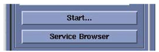
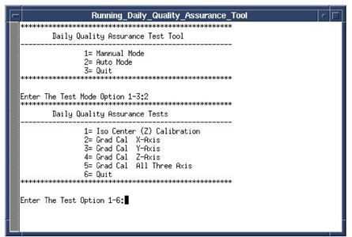
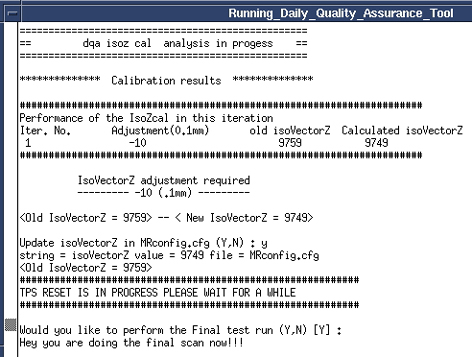

Operating Documentation
Direction 5440000, Rev# 5
Signa HDxt Service Methods
Module Version 1.0, Version Date 5/3/07
Operating Documentation |
| Required Persons | Preliminary Reqs | Procedure | Finalization |
|---|---|---|---|
| 1 | Not Applicable | 30 mins | Not Applicable |
| ||||
| Poison Hazard! | ||||
| Signa 1.5T, 1.0T, And 0.7T System Phantoms Contains Nickel, A Suspect Carcinogen | ||||
| Do Not Ingest. Dispose Of As A Hazardous Waste According To State And Federal Regulations |
| ||||
| Poison Hazard! | ||||
| Signa 3.0T System Phantoms Contains Silicon Oil, A Suspect Carcinogen | ||||
| Do Not Ingest. Dispose Of As A Hazardous Waste According To State And Federal Regulations |
| Condition | Reference | Effectivity |
|---|---|---|
Signa Software operational | - | - |
The electrical isocenter is the point where the x, y and z gradients are nulled. It is very important that this point be accurately located in order to pass the image quality tests. The procedure uses the DQA phantom and Daily Quality tool for analyzing the data. The Daily Quality tool analyzes the DQA image and determines the optional z direction offset that is needed to center the landmark at the z isocenter. The tool optionally updates the isoVectorZ value contained in the system configuration file (MRconfig.cfg). If you choose to update the system configuration file, you must reboot the system. Note: For TwinSpeed, the entire procedure only needs to be run on one gradient mode, Whole Body (WB). Running the procedure on both WB and ZOOM will not hurt, but is just not necessary.
Place head coil on cradle and plug coil in.
Place DQA phantom in head coil.
| NOTE: | Phantom Placement is Critical. Please take the time to make sure that the phantom is in alignment with the bore and the head coil. |
Turn on alignment lights.
Move the cradle to center the phantom with the alignment light.
With laser light on center of phantom, press the Landmark button.
Press [Move to Scan] . (Head coil should automatically move to the center of the magnet).
Go back to the GOC and resume Tool Setup.
The Daily Quality tool analyzes the DQA image to determine if the image is skewed in the x direction (x-y planes). Analysis performed on an image with a few degrees of skew will give an accurate isocenter location. If the image is skewed more than a few degrees, it will still be analyzed, but the adjust values for isoVector-Z may be inaccurate. In this case, the phantom should be repositioned and another scan performed.
Select Utilities Desktop. Refer to Illustration 1.
Illustration 1: Utilities Desktop

Select [Cal/Checks] from the Service Desktop Manager.
Select [Service Browser] from Service Desktop Manager (CSD). Refer to Illustration 2.
Illustration 2: Service Browser

Select the [Calibration] tab. Refer to Illustration 3.
Select DQA Calibration from the calibration list. Refer to Illustration 3.
Select [Click here to start the tool]. Refer to Illustration 3.
Illustration 3: MR Service Desktop

The Daily Quality Assurance Test tool will appear. See Illustration 4 .
Illustration 4: Calibration Tool

Enter “2” and press the <Enter> key.
Select the Test Option – type 1 [1= Iso center (Z) Calibration] <Enter>.
The analysis tool will automatically set up scan parameters and will perform the scan. See Illustration 5.
Illustration 5: Analysis Tool

After the scan is complete the tool will automatically launch the analysis and display the results. See Illustration 6.
Illustration 6: Analysis Results

If adjustment is required then type Y to update isoVectorZ value in MRconfig.cfg.
| NOTE: | TPS will automatically reset after update to MRconfig is complete. |
Type “Y” when prompted to perform the Final Test run. See Illustration 7.
Illustration 7: Final Test Run

Review the test results to see if the calibration passed or failed. See Illustration 8.
| NOTE: | If passed then go to Step 12, if failed checked the phantom centering and run the calibration again. |
Illustration 8: IsoCenter Calibration Results

Enter Test Step Option 6 when calibration is complete, then press <Enter> to quit.
Remove all phantoms and coils from the magnet.
Return the scanner to normal operation.